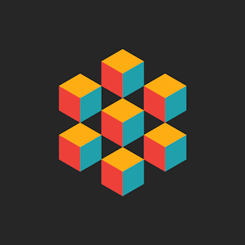

Gabrielle Alcime

A PORTFOLIO
In Gabrielle's "Ballgame Project" she simply created multiple balls
that bounce around a person's computer screen and flashes different colors
when the file is opened. The "Ballgame Project" was a relatively quicker project in comparison to the other projects
that Gabrielle has completed.
The beginning of the project code is as follows:
import pygame
import random
# Define some colors
BLACK = (0, 0, 0)
WHITE = (255, 255, 255)
GREEN = (0, 255, 0)
RED = (255, 0, 0)
BLUE = (0, 0, 255)
GREY = (127, 127, 127)
LIGHTBLUE = (132,112,255)
pygame.init()
# Set the width and height of the screen [width, height]
SCREEN_WIDTH = 700
SCREEN_HEIGHT = 500
screen = pygame.display.set_mode((SCREEN_WIDTH, SCREEN_HEIGHT))
pygame.display.set_caption("Ball Game")...
In the "Snake/ObamaIcon" project, Gabrielle worked to make an image with a similar coloring format to Obama's infamous blue and red "hope" campaign picture.
The instructions for the "Snake/ObamaIcon" project were...
-You can get a similar effect if you look at each pixes RGB, or red green blue, values. RGB values work like light.
If a color has high values for all three colors, it is close to white. If there are low values, its close to black.
If you add all the values together, you get a number that correlates to how light the color is.
Lighter colors get colorized yellow. Medium/light colors get coded as light blue. Medium/dark colors are red and very dark colors get coded as dark blue.-
The beginning of the project code is as follows:
from PIL import Image
darkBlue = (0, 51, 76)
red = (217, 26, 33)
lightBlue = (112, 150, 158)
yellow = (252, 227, 166)
Green = (0,0,255)
White = (255,255,255)
Black = (0,0,0)
intensity = red+Green+darkBlue
colorlist= []
im = Image.open(python.jpg)
print(im)
im.rotate(0).show()
pixels = im.getdata()
pixel_list=list(pixels)
for color in pixel_list:
red=color[0]
Green=color[1]...
In the "CityScroller" project, Gabrielle worked to create an moving object that resembled a city building. Hence, the name CityScroller.
The beginning of the project code is as follows:
import pygame
import random
BLACK = (0, 0, 0)
WHITE = (255, 255, 255)
GREEN = (0, 255, 0)
RED = (255, 0, 0)
BLUE = (0, 0, 255)
GREY = (129, 129, 129)
YELLOW = (255,255,0)
SCREEN_WIDTH = 800
SCREEN_HEIGHT = 600
x = 700
y = 400
pygame.init()
screen = pygame.display.set_mode((SCREEN_WIDTH, SCREEN_HEIGHT))
Building1 = pygame.draw.rect(screen, BLUE, [x,y,300, 200])
def random_color():
return random.choice(colors)
# initialize the pygame class
pygame.init()...
Links:
BALL GAME
SNAKE/OBAMAICONE
CITY SCROLLER